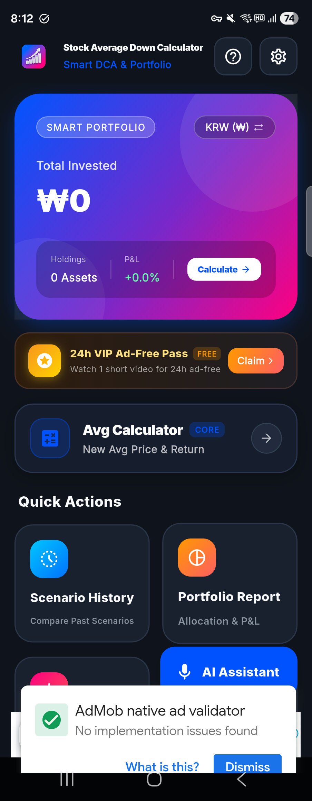

EXECUTIVE SUMMARY
LEAD PRODUCT CASE
급락하는 주식·가상자산 시장에서 뇌동매매를 방지하고, STT 자연어 음성 인제스천과 가중평균·Goal Seeking 역산 엔진을 통해 투자자의 리스크를 최소화하는 고성능 금융 유틸리티 모바일 앱입니다.
Lead PM & Senior Flutter Engineer
시장 리서치, PRD, W3C 디자인 시스템 설계 및 클라이언트 100% 구축
Flutter, Riverpod, SQLite
Speech-to-Text, 24h VIP 광고 제어 라이프사이클 및 오프라인 영속화
CORE VALUE PROPOSITION
3대 차별점
🎙️ 1초 음성 입력
자연어 STT 파싱
📊 A/B 시나리오
동일 자금 방어율 대조
🎯 목표가 역산
필수 수량 Goal Seeking
KOREAN UI (KRW ₩)

GLOBAL UI (USD $)
